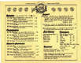
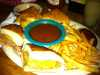

First of all, what qualifies as a hamburger?
Rules
-
Just Austin
I'm not gonna talk about anywhere other than what I know. To do otherwise would just be stupid
-
Less than $8.00
Hamburgers are pretty simple food: they're essentially a meal you can carry. In my mind, anything that costs more than eight dollars is a chopped steak sandwich. Yeah, the limit is pretty arbitrary; feel free to complain here if you don't like it.
-
Try each three times
Consistency is the essence of this food. So many things can change over time, that this is essential. I won't rate anything without trying it at least thrice. Also, I'll try to keep at the ones that are already rated to make sure they're still in the right place.
-
Beef only
This is for my sanity. There are so many varieties with beef alone that I'm way over my head. Include all the other patties and I might as well start reviewing sandwiches (which would be a Sisyphean effort).
-
Cheese?
To me, cheese is a matter of preference. The term "hamburger" includes cheeseburgers, which is simply a more specific term. In general I like both quite a bit. But some special concoctions would be sorely off without that unique cheese.
da List
- Casino el Camino
- hopdoddy burger bar
- Fuddruckers
- Hyde Park Bar & Grill
- Twisted Root
- Smash Burger
- The Frisco
- Denny's at 1601 I-35 N
- Hut's Hamburgers
- Nau's Enfield Drug
- Mighty Fine
- Texadelphia
- Dart Bowl
- Central Market
- Billy's on Burnet
- Five Guys Burgers and Fries
- P. Terry's Burger Stand
- Sandy's Hamburgers
- Dan's and Fran's Hamburgers
- Phil's Icehouse
These burgers have always been amazing: somewhere around 3/4 pounds of high-quality beef cooked just right. While the cooks are surly and the wait is much longer than you expect, the quality of the hamburgers are without peer in this town. All the varieties I've tasted were tops in the city. Wow!
A relative new-comer to Austin, but daaaamn! Their regular burger is pretty good, but some of their specialties are sublime. I particularly like the Terlingua, Goodnight, and Diablo burgers.
Both locations are super-popular, which means standing in line almost as long as you'd wait at the Casino el Camino (which has a much cooler atmosphere). Also, with popularity comes a rise in burger prices. They might be shut out of this list soon.
As much as I hate to admit, a chain restaurant sits comfortably in third place. But I gotta be honest to myself and the world: Fuddruckers makes damn good hamburgers. And if you're creative with the fixin's (and they give you plenty of choices), you can easily make a sublime burger.
Their meat is pretty high quality with the right amount of fat. The buns are toasted very nicely and do the job of holding a giant burger in place without getting in the way. And you can even make a salad on your plate for free (mayo + A1 + hot sauce = salad dressing)!
Inexplicably, all the Fuddruckers in Austin closed simultaneously, but one can still be found on I-35 in Round Rock and somewhere in Oak Hill (or so I've been told). Update: Found a Fuddruckers near Cedar Park in the Lakecreek Mall area on 620.
At the fork in the road since I was in high school, this place has been making excellent hamburgers. The quality has dropped in the past year or so, causing them to move from 2nd to 4th place. Still, I can highly recommend these burgers as long as you specify (and insist once they arrive) at medium-rare (their standard medium is dry).
A Dallas chain that's quickly expanding, they did a really cute job with their first Austin location. And they did an excellent job converting an abandoned fast-food joint into a hip and comfortable place to eat and hang out. Not only did they manage to make an outdoor bar that's pleasant even on ugly-ass Burnet Road, but they added some mini-golf for the kids too. Lots of attention to little details throughout make Twisted Root a particularly pleasant and interesting place.
The burgers are juicy with a good char. The menu choices are creative and tasty. And their meat selection is the best I've seen anywhere. Don't forget to sample their pickle bar (which inched Twisted Root above Smash Burger)! Shakes are over-rated (small and lacking good flavor definition).
Yet another chain has leapt into Austin and surprised me by their high quality! The friendly folks running the franchise in the Mueller development have consistently put out delicious burgers. Extremely similar quality to Twisted Root, I have always been very pleased with the juicy and tasty hamburgers they serve.
I only hope this place survives. It's location is not that good, and their advertising is minimal. While they have all the tax breaks of being in Mueller (that's another story!), it doesn't look like they're raking in the bucks that a big corporation expects from a franchise. Another possibility is that they may lower their burger quality shudder.
Both burgers, the Down South and The Frisco are excellent and completely satisfying. But the quality has diminished since their move from the super-funky-cool-sixties place to their new location. I don't get it; the people working there convinced me that everything is exactly the same, but the hamburgers are simply a notch lower than before. Perhaps they upgraded their equipment to something that's not quite as hot because the char (which creates the coveted Maillard reaction) isn't quite like before.
Notice that this is location specific. This particular Denny's is where they train managers. Consequently it's an excellent restaurant with brilliant hambugers. Go ahead, try it; they're open right now.
Finally made it to Chronicle's fave. This has been around for a long time, and is pretty good. Nice selection of special burgers. And if you like giant onion rings, this is the place.
Only open for lunch, but very nice. This place hasn't changed much in many decades, which is what makes it so sweet. The service can be swift or slumberly--haven't figured out what makes the difference. But the burgers are always worth it.
Yeah, another chain, I know. When first opened, the burgers were surprisingly good. But as time passed and the thrill of novelty wears off, the burgers have declined slightly in quality. But you can specify the done-ness (perfect medium rare last time--made a big difference).
However, they have some of the best french fries in town (seriously!), and the only thing better than their lemonade is their strawberry lemonade!
Ah, memories of scrambling for lunch at UT. I couldn't afford the cheese-steak, so I always got their burger (to go, to avoid the enormous line for a seat). The brothers running the place always remembered my name and how I liked my burger.
The original place on the Drag just closed, but the other locations are pretty tasty, just not as memory-evocative. I know that cheese-steak looks great (and it is!), but go ahead and give the burger a chance; you'll be pleasantly surprised.
Hidden over to the right side (as you enter) is a greasy little restaurant. And you'll see that most of the patrons are not bowling; that's a good sign. While most are enjoying the enchiladas (they lace them with crack!), the hamburgers are quite good, too.
Yes, this souped-up HEB at Lamar & 38th makes a damn good hamburger. One would hope so, as we know where they get their raw ingredients!
Don't know what started me going there, but I usually enjoy one of their hamburgers while watching a Packer's game with Wisconsin expats. And do you know what? their veggie burger is almost as good as the real thing!
This chain is fairly new to Austin. I am pleased that all their additions (nice selection) are gratis, allowing enormous customization to your burger. And if you're really hungry, you can fill up on peanuts while waiting (kind of odd).
An Austin favorite, and easily the best of the drive-thru burgers, P. Terry's was one of the first to certify (and advertise) that their food is all-natural. Think: what if Whole Foods ran a fast-food burger joint. And it's all quite good, too.
One of the last of the old national Sandy's chain, for decades this place has been a popular stop-off after a day at Barton Springs. I usually go for the soft-serve ice cream (screw that tasteless white defecation from Dairy Queen!), but the burgers are good, hot, and will make an excellent meal for the hungry swimmer.
Thanks to a divorce, we now have two chains of high quality inexepensive hamburgers in Austin. I can't tell a difference between the two, but I do enjoy them thanks to their plentiful locations and hard-to-beat price.
Barely good enough for this list, I only include Phil's because of the nice variety, very good fries (regular, sweet potato, or half/half), and the fantastic ice cream six paces away. While flavorful, the burgers are consistently over-cooked, dry, and rubbery.
Has-beens
- Crown & Anchor Yachting Club
Been a hangout for UT grad students since I can remember. They changed their nice greasy fries, but the burgers are still very good. And their beer selection is excellent.
UPDATE: I waited a very long time between reviews. The quality has been dropped on the floor. Tastes like everything was made by Sysco restaurant supply. Ugh! Go next door to the Posse East instead.
Under Review
These are the restaurants that have not been completely evaluated. I believe it's very important to try each burger three times to make sure that the place is consistent and properly placed.
- Moonie's Burger House
First try wasn't so good. Dry & overcooked (medium-well) even after specifically requesting medium rare (to which they said, "Ok").
Graveyard
Here lie the remains of excellent hamburger joints who have passed away. Only their memory and a lingering after-taste remain.
- Mike's Pub
- The Hub
- Mad Dog & Beans
- GM Steakhouse
- Holiday House
- El Arroyo's Cuban Burger
- Drungo Ice House
The Poster Child for diamond-in-the-rough restaurants, this greasy dive was located in the stairway of a parking garage downtown. Great tasting greasy burgers.
Hidden in the hills of West Austin just off 2222, the friendly staff made a number of exceptional burgers. And their burger & Dom Perignon special was an oddity of high proportions.
Interesting note: you could choose you burger as "Fatty" or "Flatty." At first this just seems like an easy way to distinguish the quarter pound from the half pound burger (approximately), but there's considerably more to this issue. The fatter the burger, the more time the cook has to develop the Maillard Reaction on the burger's surface without drying out the inside. I'll write some more on this in the future--promise!
Long gone, but not forgotten, Mad Dog & Beans was an institution for UT students and hippies alike for a long time. This small wooden-porch building a stone's throw from the Drag hosted perfectly charred hand-formed patties with good variations were always satisfying and well-loved. Add a Blue Bell ice-cream shake (about half a dozen flavors) and you're in heaven. Oh yeah, they used large steak-style fries.
Their hot-dogs were split and served on hamburger buns. The burgers were so good that I rarely tried them, but I remember that the chili-dog (Mad Dog's Dog) was pretty tasty. Oddly, their beans weren't that good.
Mad Dog & Beans closed many years ago, but was beloved. Too bad the owners screwed their employees by not paying the IRS their income tax (which caused the shut-down). Fuckers.
Long an Austin staple (started in 1962), the last GM Steakhouse closed its doors in 2006. The original location on the south side of the Drag was famous for its great cheeseburgers and in-your-face attitude. For example, cheeseburgers were something like $1.95, yet cheeseburgers-without-the-cheese were $2.15; "Hamburger" was a forbidden word, and anyone using it was subject to ridicule. Of course, you'd proably be made fun of anyway just for going there. Students loved it!
Opened in 1947, several of these populated Austin, each decorated (interior and exterior) in a particular holiday theme. The one on Airport, near my house was a steep A-frame building made to look like a tropical hut with real anchors in the parking lot. Inside were were several aquariums (salt water!) and plenty of Polynesian items. One had an alligator and other animals, and I seem to barely recall one has a western theme.
The hamburgers were all "Flame-Kissed," meaning they were cooked on a grill over a fire instead of in a pan or on a griddle. This gave a great char on the patties and let excess fat drip off (allowing a higher fat content beef).
El Arroyo is still open; they just discontinued this item. Too bad, as this was #3 on my list! Some idiot shelved an A+ hamburger! Sigh.
Photo by Leila M.
Every town has spots where restaurants just can't succeed, and Drungo was at one of those locations (29th & Rio Grande). This short-lived bar & grill had an excellent burger. Extra high quality veggies, well-toasted buns, and cooked at a properly high temperature gave a great hamburger. The photo at the top of this page is a Drungo cheeseburger.
Eww
There are some burgers that I wish I hadn't eaten. The memorable ones are here. And yes, chopped-steak sandwiches are included as well. Few things are as disappointing as spending a lot of money on a "hambuger" and having wished you went to Dan's instead.
- Vince Young's Steakhouse
I like Vince Young. I like his steakhouse as well. To my knowledge, it's the only non-chain prime-quality steak place in town. The food pretty much is as rich as you'd expect for a top-dollar joint downtown.
And I know I said that I try everything thrice. But $23 is too much to pay to suffer through their hamburger more than once.
Hungry for a really good chopped-steak sandwich (ie expensive hamburger), I wandered in and sat at the bar. The friendly and attentive staff took my order for a "Wagyu Brisket Burger. I was immediately skeptical, but the bartender insisted that brisket provides a greater flavor and made a delicious burger.
Here in Texas, we know brisket. Barbecue brisket was invented just twenty minutes from my house (Kreuz'). Brisket has lots of connective tissue, which explains why it's such a cheap cut of meat despite its full flavor. Low and slow cooking gelatinizes the tendons, creating something wonderful: Texas bbq brisket.
But hamburgers are cooked hot and quick. And even though this place starts with the most tender beef in the world, a quick burger sear combined with a coarse grind yielded a pile of inedible beef tissue on my plate. At times I thought I was chewing beef-flavored gum.
I can't see how they can fix this problem. Brisket is a terrible idea for a hamburger! What were they thinking?
Your Turn
Comments, suggestions? Feel free to add your thoughts here. I know that I've only just begun to explore Austin's hambugers, and I promise to do my best to try out the joints you talk about.
[todo: user comments]